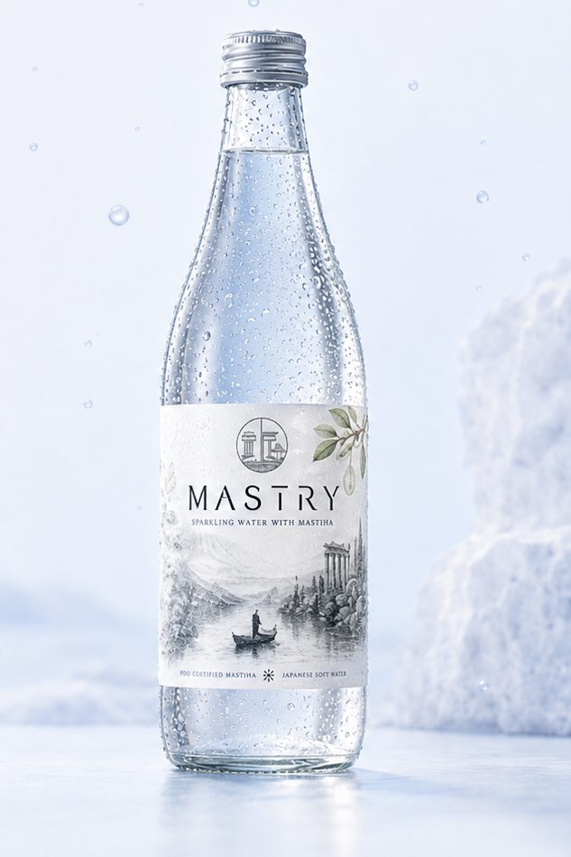
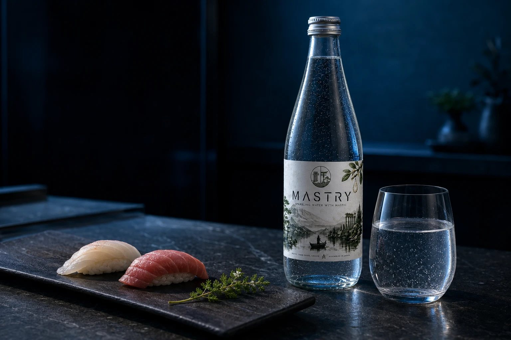
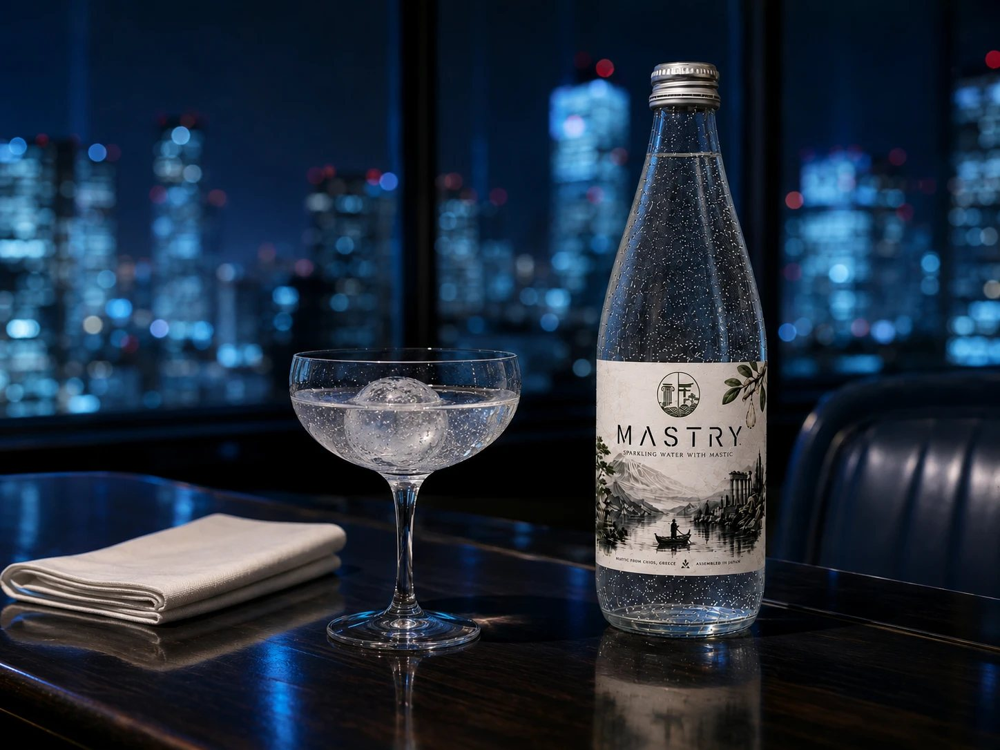

PDO mastiha of Chios × Japanese soft water
For the nights without a drink —
a glass that won't compromise.
A premium sparkling water — the rare aroma of mastiha, folded into the soft spring water of Japan. No sugar or sweeteners, 0.00% alcohol.

潜る- PDO ingredient
- No sugar
- 0.00% alcohol
- Japanese soft water
No alcohol tonight.
But not just water, either.
At the dinner table. Stepping out of the sauna. Closing a long day. Even in the hours without alcohol, there is a glass worth not compromising on. MASTRY is made for exactly those hours.
Three encounters,
one taste.
Chios mastiha
A rare resin gathered on only one island on earth — the source of MASTRY's singular aroma.
Japanese soft water
Low in minerals, it draws out the delicate aroma cleanly instead of burying it.
Fine carbonation
Soft, fine bubbles carry the aroma upward and leave a long, quiet finish.
It doesn't start where other sparkling waters start.
Hard to describe.
Better tasted.
First, clear
It opens with the transparency of pure spring water — soft and weightless.
Then, forest
A quiet aroma of forest and resin rises slowly through the middle.
Last, citrus
And finally, a citrus echo that lingers, long and unhurried.

Where the
glass belongs.

Founding
release.
The first lot is made in small numbers. If you'd like to try it, leave your email below — Founding Members are offered the first lot in order of sign-up, before public sale.
Please check your email address.We couldn't register you just now. Please check your connection and try again, or email hello@mastry.jp.
We use your email to tell you about the launch, early access and events. Privacy policy
You are No.—
One last thing — what drew you in? (one tap)
The ingredient's
own pedigree.
See the
difference.
| Item | MASTRY | Sparkling water | Flavoured water | Non-alc cocktail |
|---|---|---|---|---|
| Sugar / sweetener | None | None | Often | Often |
| Alcohol | 0.00% | 0% | 0% | Under 1% |
| Aroma / character | Mastiha | Almost none | Flavouring | Mixed |
| Main ingredients | PDO resin + spring water | Water + CO₂ | Water + flavouring | Juice + syrup |
| Made for | Dinner · sauna · night | Everyday thirst | Casual refresh | Bar occasions |
Before you
reserve.
What does it taste like?
Is there any alcohol?
Sugar and calories?
Allergens?
How should I store it?
Shipping & delivery?
Price & payment?
Be among
the first.
Rare PDO mastiha, soft Japanese water, nothing more. Reserve early access to the first lot.